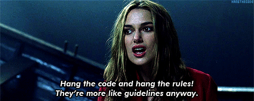

NAP-10 — Migration of the event system#
- Author:
Wouter-Michiel Vierdag <michiel.vierdag@cellonautica.ai>
- Created:
2026-26-07
- Status:
Draft
- Type:
<Standards Track | Process>
- Version:
1
Purpose#
Napari currently relies on several mechanisms for propagating information throughout the application, including Qt signals and slots, vispy events, napari.utils.events, and psygnal. These mechanisms are used interchangeably in different parts of the codebase, despite representing different concepts: some notify that state has changed, while others dispatch user interactions before any state change has occurred. As a result, application logic becomes coupled to backend-specific APIs and contributors must understand multiple communication models.
A key observation motivating this proposal is that not all communication in napari has the same semantics. State-change notifications (signals) and interaction dispatch (events being dispatched, though not in the traditional sense of having one targeted receiver) serve different purposes and should not necessarily share the same abstraction.
The goal is therefore not to replace every event with psygnal, but to establish a coherent application dispatch model with explicit semantics for signals, events, and the relationship between them. This document proposes an initial migration strategy rather than a fixed implementation plan. We expect to refine the design as experience is gained during implementation, documenting significant architectural decisions and any deviations from the original proposal.

Terminology and concepts#
Throughout this proposal, the terms event and signal are used in their architectural sense rather than according to napari’s current implementation. The distinction is important because one of the goals of this migration is to clarify the semantics of communication throughout napari. Much of the confusion in previous discussions arose because the word event has been used to describe both user interactions (such as mouse presses) and state-change notifications (such as layer properties changing), despite these representing fundamentally different concepts.
Events in Qt terminology#
Events in the sense of Qt are objects derived from QEvent (or one of its
subclasses) that represent something that happened either inside an application
or as a result of external activity that the application needs to respond
to.1 An event is delivered to a specific QObject, which acts as the
intended receiver. Every QObject has an event() method that acts as a
dispatcher: it does not normally handle the event itself, but routes it to the
appropriate event handler such as QObject.mousePressEvent(),
QObject.keyPressEvent(), or QObject.paintEvent(). An event handler is a
method of a QObject subclass that contains the code responsible for
responding to a particular type of event when it is delivered to that object.
If the handler accepts the event, Qt considers it handled. This means that the
event is not propagated further. If it is ignored, Qt may attempt to propagate
the event to another object, such as a parent widget.
flowchart TD
A[External source<br/>Mouse / Keyboard / Timer / Application] --> B[Create QEvent object]
B --> C[Event Queue]
C --> D[Qt Event Loop]
D --> E[Send event to target QObject]
E --> F["QObject::event(QEvent*)"]
F --> G{What type of event?}
G -->|Mouse| H["mousePressEvent()<br/>mouseMoveEvent()"]
G -->|Keyboard| I["keyPressEvent()<br/>keyReleaseEvent()"]
G -->|Painting| J["paintEvent()"]
G -->|Timer| K["timerEvent()"]
H --> L{Accepted?}
I --> L
J --> L
K --> L
L -->|Yes| M[Event handled]
L -->|No| N["Event ignored<br/>May propagate to parent"]
M --> O[Qt continues event processing]
N --> O
A Qt event is therefore a directed message with three important properties:
An event has a source
The operating system
The Qt framework
The application itself
An event has a target
A specific QObject
Usually the widget under the mouse cursor, the widget with keyboard focus, etc.
Dispatch chain
Qt creates the event
The event enters the event queue
The event loop retrieves it
Qt sends it to the target object
QObject.event() dispatches it to the appropriate handler
The handler decides whether the event was handled
The key idea is: A Qt event answers the question: “Something happened. Who should handle it?”
Signals (Qt signals and slots)#
Signals and slots are a different mechanism from events.
A signal notification emitted by an object to announce that some observable state has changed. The emitter does not know, or need to know, which components are listening.
A slot is a function (or method) that is connected to a signal and is executed when that signal is emitted. A slot defines the action that should happen in response to a notification. It says “Perform this action when signal happened”.2
The model looks like this:
flowchart TD
A[Object changes state<br/>or something interesting happens] --> B[Object emits signal]
B --> C[Signal]
C --> D[Connected slot 1<br/>Callback function]
C --> E[Connected slot 2<br/>Callback function]
C --> F[Connected slot 3<br/>Callback function]
Unlike events:
Signals do not have a single intended receiver.
Signals can have zero, one, or many receivers.
Signals are connected explicitly by the developer.
Signals are not dispatched through
QObject.event().
The object emitting the signal does not need to know who is listening or what the listeners will do.
Now connecting a signal to a slot would look something like this:
button.clicked.connect(save_file) # clicked is signal and save_file is the slot
Now clicked could also have other slots connected:
flowchart LR
A[QPushButton] -->|emits| B[clicked signal]
B --> C[save_file slot]
B --> D[update_status slot]
B --> E[other connected callbacks]
The button does not know:
what save_file() does
how many listeners exist
whether anyone is listening at all
It just emits.
Signal / slots vs Events#
Although both mechanisms communicate information between components, they serve different purposes. Events dispatch interactions to potential handlers, whereas signals notify interested observers that state has already changed.
Qt Event |
Qt Signal |
|
|---|---|---|
Meaning |
Something happened |
Notify observers about something |
Direction |
One sender → one target |
One sender → many receivers |
Receiver |
Determined by Qt |
Explicitly connected by programmer |
Routing |
Event queue and event dispatcher |
Signal-slot connection |
Handler |
Event handler ( |
Slot / callback |
Propagation |
Can be accepted, ignored, or propagated |
No propagation |
Example |
Mouse click, key press, paint event |
Button clicked, value changed |
A dispatch mechanism determines how information flows between components. Both events and signals are dispatch mechanisms, but they have different semantics. Event dispatch determines which component should respond to an interaction, potentially allowing handlers to consume or propagate it. Signal dispatch broadcasts that state has changed to any interested observers. The remainder of this proposal uses the term dispatch model to refer to the combination of these mechanisms that napari exposes at the application level.
Current terminology in napari#
By now it is perhaps already clear that napari is using terminology different from Qt at the moment. Most of the objects currently exposed through napari.utils.events are semantically signals, despite being called events.3 They are emitted after state has changed, support multiple connected callbacks, and do not participate in event propagation or acceptance. In other words, they behave much more like Qt signals than Qt events. The example below showcasing a napari event that behaves like signal -> slot highlights this:
layer.events.data.connect(callback)
This means that conceptually it looks like this:
flowchart TD
A[Layer data changes] --> B[data changes]
B --> C[layer.events.data]
C -->|.connect| D[Viewer updates]
C -->|.connect| E[Plugin reacts]
C -->|.connect| F[Other listeners]
So in short, In napari terminology, an “event” is usually a state-change
notification, which is much closer to a QSignal than a QEvent.
Throughout the remainder of this proposal, the term signal refers to state-change notifications, while event refers to dispatching interactions that may be handled or propagated. This distinction reflects the intended semantics of the proposed architecture rather than the terminology used by the current implementation.
Situation in envisioned rendering backend (pygfx)#
For migration, it makes sense to look at how other rendering backends deal with
events. From code in pygfx it is clear that the way pygfx talks about
events is very similar to the way Qt talks about it. This is clear from their
docstring of the Event class4:
class Event:
"""Event base class.
If a target is set, an event can bubble up through a hierarchy
of targets, connected through a ``parent`` property.
To prevent an event from bubbling up, use ``stop_propagation``.
It is also possible to cancel events, which will stop any further
handling of the event (also by the same target).
Parameters
----------
type : Union[str, EventType]
The name of the event.
bubbles : bool
If True, the event bubbles up through the scene tree.
target : EventTarget
The object onto which the event was dispatched.
root : RootEventHandler
A reference to the root event handler.
time_stamp : float
The time at which the event was created (in seconds). Might not be an actual
time stamp so please only use this for relative time measurements.
cancelled : bool
A boolean value indicating whether the event is cancelled.
event_type : str
Unused.
"""
Although the details differ slightly (for example, cancelled versus Qt’s accepted state), the overall dispatch model is conceptually very similar to Qt’s: events are dispatched to targets, may propagate, and may be consumed by handlers.
Previous discussions#
The ideas presented in this proposal have been discussed in various forms over several years, motivated by different but closely related goals including improved developer ergonomics, stronger static typing, backend independence, and simplification of napari’s communication infrastructure. Although these discussions often focused on adopting psygnal, they collectively highlight a broader architectural need for a more coherent application dispatch model.
One of the earliest discussions arose from the migration of magicgui to
psygnal #3373. That
discussion highlighted the usability and maintainability benefits of replacing
the dynamic Event objects with explicit, typed signals. In particular, it
noted that the current napari.utils.events API relies heavily on dynamically
generated event objects and EmitterGroup, making it difficult to discover
available events, reason about callback signatures, provide IDE autocompletion,
or perform static type checking. By contrast, psygnal provides a Qt-like
signals and slots API with explicit signal definitions, improved typing,
and callback signatures that are immediately visible to users and developers.
A second discussion, motivated by experiments replacing the vispy canvas with a pygfx backend #7373, identified the event system as a key architectural obstacle to supporting multiple rendering backends. At present, many user interactions originate within vispy before being propagated into napari, tightly coupling application behavior to a specific rendering backend. The discussion proposed that napari should instead own its application-level dispatch model, with rendering backends acting as integration layers that translate between backend-native communication mechanisms and napari’s internal abstractions.
Building on these discussions, @jacopoabramo
explored an initial prototype migration to psygnal in
#8387, following an earlier
discussion on Zulip. The prototype was primarily motivated by improving static
typing across the codebase. It demonstrated that replacing EmitterGroup with
explicit psygnal.SignalGroup definitions could provide significantly stronger
typing and improve IDE support, although accommodating napari’s inheritance
hierarchy required additional typing protocols and highlighted several
implementation challenges. The prototype also identified opportunities to
simplify layer initialization, property setters, and event definitions. It was
intentionally presented as an exploratory implementation rather than a
mergeable solution, with the goal of informing future architectural
discussions.
Finally, #8509 demonstrated that
psygnal-based models can coexist successfully within napari by migrating
overlays from napari’s custom EventedModel implementation to
psygnal.EventedModel. Although limited in scope, this provided an initial
proof of concept that parts of napari’s event infrastructure can be migrated
incrementally without requiring an immediate, project-wide transition.
Rationale#
The current communication infrastructure has served napari well, but it has become a significant source of architectural complexity. Today, napari uses several communication mechanisms simultaneously, including Qt signals and slots, vispy events, napari.utils.events, and, in some places, psygnal. These mechanisms are present throughout the codebase and represent different communication semantics, but there is currently no clear architectural distinction between them.
As a result, contributors must understand multiple APIs with different connection patterns, callback signatures, and behaviors, while the napari application logic is often coupled directly to backend-specific communication mechanisms. A key motivation for this migration is to establish a coherent application dispatch model for napari with explicit semantics for different types of communication. In particular, napari currently uses the term event to describe both state-change notifications and user interactions, despite these representing fundamentally different concepts.
State changes, such as a layer’s opacity changing or a layer being inserted, are naturally represented as signals: notifications that something has changed and that interested components may react. User interactions, such as mouse and keyboard input, are instead events: dispatched interactions that may require ordering, handling, propagation, or acceptance before application state is modified.
The goal of this migration is therefore not to replace every event with psygnal, but to establish a clear separation between these concepts. Psygnal provides the foundation for napari’s internal signaling infrastructure, while backend-specific event systems such as those provided by Qt and vispy remain encapsulated where they are required. Rather than allowing GUI or rendering frameworks to define napari’s application-level communication model, napari should own the interfaces between application components and treat backend-specific systems as implementation details at the boundaries of the architecture.
Beyond the architectural benefits, the current napari.utils.events
implementation has several limitations when used for state-change
notifications. These notifications are represented by dynamically constructed
Event objects whose available attributes are determined at runtime, making
them difficult to inspect, document, and type. Similarly, EmitterGroups are
created dynamically, limiting IDE autocompletion and static analysis.
In practice, many of these notifications have simple, well-defined signatures (for example, “opacity changed” or “layer inserted”), yet the current implementation obscures this information behind a generic event object. Psygnal provides a more explicit and familiar signaling model. Signals declare the values they emit, callback signatures are directly visible, and static type checkers and IDEs can infer the expected interfaces. Many contributors are already familiar with the Qt signals and slots model, and psygnal provides similar semantics in pure Python while remaining independent of any particular GUI framework.
Finally, establishing a consistent application-level communication model will simplify the internal architecture and reduce the maintenance burden of supporting multiple overlapping abstractions. It will make communication pathways easier to reason about, improve static typing and documentation, and provide a clearer foundation for future work such as additional rendering backends. While the migration represents a substantial effort, it provides an opportunity to modernize one of napari’s core infrastructure components while preserving the semantics required by both state notifications and user interaction dispatch. Please see below for a more concise display of the problems with the current communication model.
The problem with the current communication model#
Napari currently uses several different mechanisms to communicate between components throughout the codebase:
the custom napari.utils.events framework (derived from VisPy)
Vispy’s event system
Qt signals and slots
psygnal (currently used by overlays)
These mechanisms are used in different parts of the codebase time and represent different communication semantics. As a result, different parts of napari communicate using different abstractions, making the flow of information through the application difficult to reason about.
This has several consequences.
Tight coupling to backend libraries#
Much of napari’s internal communication is coupled directly to Qt or vispy because napari application code frequently interacts with their native communication mechanisms. This makes it difficult to separate application logic from GUI and rendering concerns and complicates support for alternative backends.
Ideally, backend-specific communication should remain an implementation detail, with napari exposing a consistent application-level dispatch model regardless of which GUI or rendering backend is being used.
Multiple programming models#
Contributors currently need to understand several communication models:
Qt signals and slots
Vispy events
napari.utils.events
psygnal
Each has different semantics, callback signatures, connection mechanisms, and lifecycle rules. This increases the cognitive load for contributors, makes APIs less consistent, and complicates the development of reusable infrastructure.
Dynamic event definitions#
Many state-change notifications are represented using dynamically constructed
Event objects and EmitterGroups.
The information carried by these events is determined at runtime, making it difficult to:
discover available notifications
understand callback signatures
provide IDE autocompletion
perform static type checking
generate accurate documentation
Although many notifications have simple, well-defined interfaces (for example, “opacity changed” or “layer inserted”), these interfaces are hidden behind generic event objects.
Threading#
Napari already contains components that execute across multiple threads, including computational workloads and GUI-related components. Threading behaviour is currently influenced by the communication mechanisms provided by backend libraries. For example, Qt imposes thread-affinity requirements for GUI objects, while rendering backends have their own communication models.
Although these constraints cannot be removed, they should remain encapsulated within backend integration layers wherever possible. Napari components should not need to understand backend-specific threading behavior simply to communicate with one another.
Furthermore, users / developers would benefit from improved communication of propagating events to the main thread.
Proposed design principles#
The following principles are intended to guide the migration. They describe the desired architecture rather than prescribing every implementation detail. Where practical considerations require deviations from these principles, those decisions should be documented.
1. One application dispatch model#
Napari should expose a single, coherent application dispatch model for communication between internal components. Backend libraries such as Qt and vispy will continue to use their native communication mechanisms internally, but these should remain implementation details encapsulated within napari-owned integration layers. Application code should communicate using napari’s dispatch model rather than directly depending on backend-specific APIs.
2. Distinguish signals from events#
The migration should make a clear architectural distinction between signals and events. Signals represent state-change notifications. For example:
layer opacity changed
layer inserted
camera zoom changed
Events represent interactions that are being dispatched before application state changes. For example:
mouse press
mouse drag
key press
Signals and events have different semantics and should not be forced into the same abstraction.
3. Use explicit, typed signals#
State-change notifications should be represented using explicit psygnal signals. For example:
opacity = Signal(float)
layer_inserted = Signal(Layer)
camera_zoom = Signal(float)
rather than dynamically constructed event objects:
event.value
event.source
event.type
Explicit signal definitions improve:
static type checking
IDE autocompletion
documentation generation
developer understanding of APIs
4. Separate dispatch semantics from payloads#
The mechanism used to dispatch information should be independent of the objects
representing that information. Signals should emit typed values or domain
objects. Events should carry well-defined payload types describing the
interaction being dispatched. For example, an interaction event might carry a
typed MouseEvent object containing position, button, modifiers, and other
interaction-specific information. Separating dispatch semantics from payload
representation makes communication easier to understand while avoiding the
limitations of dynamically populated event objects.
5. Encapsulate backend communication#
Qt, Vispy, and future rendering or GUI backends should continue to use the communication mechanisms that are most appropriate for those frameworks. Rather than replacing these mechanisms, napari should encapsulate them within backend integration layers. This keeps backend-specific communication localized while exposing a consistent application-level API to the rest of napari and to plugins.
6. Preserve behaviour before improving APIs#
The migration should prioritize behavioral compatibility over immediate API redesign. Existing semantics—including callback ordering, event propagation, lifecycle behaviour, and plugin expectations—should be preserved wherever practical. API improvements should be introduced incrementally through well-defined deprecation cycles.
7. Make threading behaviour explicit#
Backend-specific threading constraints should remain encapsulated wherever possible. Where application-level communication crosses thread boundaries, the semantics should be clearly documented. This proposal does not attempt to redefine how backend frameworks manage threads, but it should establish clear guidance for how signals, events, and backend integrations interact with existing threading models.
8. Minimise custom infrastructure#
Where appropriate, the migration should favour standard psygnal abstractions
over custom napari infrastructure. State-change notifications should primarily
use Signal and SignalGroup, avoiding additional napari-specific
abstractions unless they provide clear architectural benefits. Interaction
events may require richer dispatch semantics than psygnal alone provides, but
these should be implemented using the smallest amount of custom infrastructure
necessary.
9. Design for long-term maintainability#
The communication infrastructure is fundamental to napari’s architecture and plugin ecosystem. The migration should favour simple, explicit, and well-documented abstractions that can evolve over time without requiring repeated ecosystem-wide API changes. A successful design should make it easier to support future rendering backends, improve tooling and documentation, and reduce the long-term maintenance burden of the communication infrastructure.
Proposed architecture#
The proposed architecture establishes a single application communication model for napari while recognizing that different kinds of communication have different semantics. State-change notifications should be represented using psygnal signals, while interaction events (such as mouse and keyboard input) should continue to be treated as events with richer dispatch semantics. Rather than attempting to replace every communication mechanism with psygnal, the goal is to ensure that napari owns the application-level interfaces through which signals and events flow.
Backend libraries, including Qt, Vispy, and future rendering or GUI frameworks, will continue to use their native communication mechanisms internally. Backend-specific communication should remain encapsulated within backend integration layers maintained by napari. These integration layers expose stable napari interfaces without leaking backend implementation details into the rest of the application. Application components—including models, viewer state, controllers, plugins, and backend integrations—should therefore communicate through explicit napari-owned signals and events rather than directly depending on backend-specific APIs. Conceptually, the architecture becomes:
flowchart TB
User["User interaction<br/>(mouse, keyboard, touch)"]
subgraph Backends
Qt["Qt"]
Vispy["VisPy"]
Pygfx["Future backend<br/>(e.g. pygfx)"]
end
subgraph Napari["napari"]
Adapters["Backend integration layers"]
Events["Interaction events<br/>(dispatch)"]
Models["Models"]
Viewer["Viewer state"]
Controllers["Controllers"]
Signals["psygnal Signals<br/>(state-change notifications)"]
Plugins["Plugins"]
end
Renderer["Rendering backend"]
User --> Qt
User --> Vispy
User -. future .-> Pygfx
Qt --> Adapters
Vispy --> Adapters
Pygfx --> Adapters
Adapters --> Events
Events --> Models
Events --> Viewer
Events --> Controllers
Models --> Signals
Viewer --> Signals
Controllers --> Signals
Signals --> Plugins
Signals --> Controllers
Signals --> Viewer
Viewer --> Renderer
Controllers --> Renderer
Under this architecture:
psygnal.SignalandSignalGroupbecome the primary mechanism for state-change notifications.EmitterGroupis gradually replaced by explicitSignalGroupdefinitions.State changes emit typed values directly (for example,
Signal(float)for opacity changes).Rich interaction events (for example mouse and keyboard input) remain event objects with well-defined semantics, including propagation and acceptance where appropriate.
Backend integrations remain responsible for translating between backend-specific communication mechanisms and napari’s application interfaces.
Qt communication remains Qt communication where appropriate, and similarly for vispy and future rendering backends, avoiding unnecessary translation for high-frequency internal operations.
This architecture separates application behavior from backend implementation details while recognizing that backend frameworks will continue to manage their own communication internally. Supporting a new rendering or GUI backend therefore becomes primarily a matter of implementing a new backend integration layer rather than introducing another communication model throughout the application.
Migration strategy#
The migration should be incremental, allowing the communication model to evolve while maintaining behavioral compatibility wherever practical. Replacing the existing infrastructure in a single step would introduce a large, difficult-to-review change with a high risk of regressions across models, rendering, GUI components, and plugins. Instead, the migration should proceed in small, independently reviewable stages, with compatibility maintained throughout the transition.
Where possible, new APIs should be introduced before legacy APIs are deprecated, allowing contributors and plugin authors to migrate gradually.
Backward compatibility#
A compatibility layer should be introduced before significant internal migration begins. The compatibility layer should allow the existing napari.utils.events API to coexist with the new signaling infrastructure. Possible mechanisms include:
re-emitting psygnal signals through existing
EmitterGroupinterfacestemporarily supporting both callback styles
wrapping legacy
Eventobjects where necessaryemitting deprecation warnings for legacy APIs
The exact implementation remains an open design question and should be informed by experience from earlier migrations, including the overlays migration. The compatibility layer is intended only as migration infrastructure and should eventually be removed.
Proposed migration phases#
1 Compatibility infrastructure#
Establish the foundations required for incremental migration.
This includes:
compatibility wrappers
bridging between
EmitterGroupandSignalGroupnaming conventions
migration utilities
any additional functionality required from psygnal
The success criterion for this phase is that new components can adopt the new communication model without breaking existing code.
2 Internal state models#
Migrate internal models that primarily communicate state changes. Likely candidates include:
EventedModelCameraSelectionsDimensionsViewerModelother internal state models
Layerafter planned refactor
These components are relatively self-contained and primarily emit state-change
notifications, making them good early candidates for migration. Where
appropriate, psygnal.EventedModel should replace napari’s custom
implementation.
3 State change consumers#
Update application components that consume state-change notifications. This includes:
controllers*
viewer logic
actions
menus
Qt widgets
plugin-facing APIs
At this stage, the majority of application state changes should be communicated through explicit typed signals.
*With regards to what is meant with controllers here, controller should:
listen to events of rendering backend and GUI frontend and tell the napari models what changed.
based on changes to the napari models tell the rendering backend / GUI frontend what to draw / update. In this respect something like the
LayerControlscan be seen as a controller and also everything that inherits the VispyBaseLayer as it translates between napari models and vispy.
4 Backend integration#
Review communication at the boundaries between napari and backend frameworks. Rather than replacing Qt or vispy communication internally, this phase focuses on ensuring that backend-specific communication remains encapsulated within well-defined integration layers. Particular attention should be paid to high-frequency interaction events, such as mouse movement and dragging, where unnecessary abstraction could introduce measurable overhead. Any proposed changes should therefore be benchmarked before adoption. Exactly how interaction events should be represented remains an open design question and should be informed by experimentation.
5 Deprecation and cleanup#
Once the new communication model has matured:
publish migration guidance
update developer documentation
deprecate legacy APIs
remove obsolete compatibility infrastructure
The length of the deprecation period should depend on the complexity of the compatibility layer and the impact on plugins.
Open design questions#
Several important questions remain intentionally unresolved.
These include:
the final compatibility strategy between
EmitterGroupandSignalGroupthe appropriate representation of interaction events
the semantics of event propagation and event acceptance
whether rich interaction events should use existing backend event objects or napari-defined event types
how backend integration layers should be structured
performance characteristics of high-frequency event dispatch
whether additional functionality is required from psygnal
These questions should be resolved incrementally as experience is gained during the migration.
Success criteria#
The migration will be considered successful when:
napari exposes a single, coherent application communication model with clearly defined semantics for both signals and events
state-change notifications use explicit, typed psygnal signals
interaction events have well-defined dispatch semantics independent of individual backend implementations
backend-specific communication remains encapsulated within napari-owned integration layers
Napari application logic no longer depends directly on backend communication APIs
event and signal interfaces are explicit, discoverable, and statically analysable
plugin authors have a documented migration path
the legacy napari.utils.events infrastructure is fully replaced through incremental changes.
threading expectations and backend responsibilities are clearly documented
adding a new rendering or GUI backend does not require introducing another application communication model.
References and Footnotes#
All NAPs should be declared as dedicated to the public domain with the CC0
license [1], as in Copyright, below, with attribution encouraged with
CC0+BY [2].
Changelog#
#1086 Introduces initial version of the document
Copyright#
This document is dedicated to the public domain with the Creative Commons CC0 license [1]. Attribution to this source is encouraged where appropriate, as per CC0+BY [2].